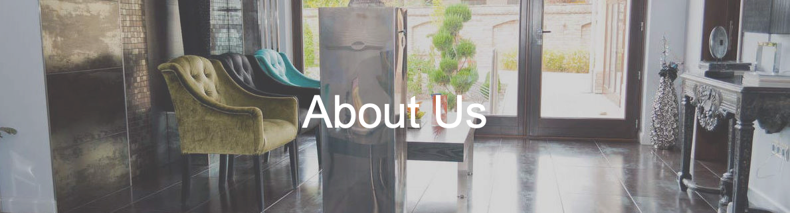

Il Perfect Smile Implant Center, una delle cliniche dentistiche più grandi dell'Ungheria, tratta i pazienti
con soluzioni complesse a tutti i problemi dentali e chirurgici orali secondo i più alti standard europei.
Siamo specializzati in odontoiatria estetica e implantologia. L'atmosfera tranquilla della nostra clinica combinata con
l'attenzione assoluta e la competenza professionale del nostro personale garantiranno che i pazienti ricevano un trattamento
di prima classe.
La qualità del nostro lavoro è garantita dal nostro moderno sistema diagnostico, dalla radiografia panoramica digitale e
dall'impianto di scansione TC. Nella clinica vengono utilizzate attrezzature, strumenti e materiali dentali della massima
qualità.
Il laboratorio odontoiatrico si trova nella clinica, garantendo che i tecnici siano sempre a disposizione del team odontoiatrico.
Tutti i materiali, compresi gli impianti, sono forniti da fornitori internazionali di livello mondiale.
Le cliniche Dentisti e chirurghi orali sono registrati presso il Consiglio dentale ungherese e molti consigli dentistici
europei, incluso il Regno Unito. La clinica ha interventi chirurgici in Irlanda e Italia.
Tutti i trattamenti sono garantiti secondo le norme UE.
La clinica cura pazienti irlandesi dal 2004. A causa del gran numero di pazienti irlandesi che hanno ricevuto cure, 7 anni fa
è stato deciso di aprire un ambulatorio a Wexford per le cure post-operatorie. Una squadra viaggia dall'Ungheria per 4 giorni
ogni mese. La clinica dispone anche di uno studio a Ravenna, Italia.
Nell'ambulatorio postoperatorio a Wexford il Dental Team cura i pazienti prima e dopo il trattamento in Ungheria. I potenziali
pazienti possono visitare Wexford per una consultazione in uno dei due ambulatori. La clinica ha recentemente installato una
moderna macchina radiografica panoramica digitale a Wexford. È collegato alla clinica in Ungheria. Il dentista a Wexford avrà
accesso a tutte le radiografie e ai registri dei trattamenti dei pazienti.
Recensioni dei pazienti
"Molto soddisfatto del trattamento finora, la cura è eccellente e il personale è meraviglioso. Non vedo l'ora della mia prossima visita."
"Vorrei ringraziare il team per i miei bellissimi denti. Sono al settimo cielo per il lavoro che hanno svolto."
"Soddisfatto del mio trattamento, un enorme ringraziamento a tutto il team della clinica: 5 stelle, soddisfatto al 110%!
Tutti hanno fatto del loro meglio per assicurarsi che avessi un soggiorno confortevole e tutto ciò di cui avevo bisogno.
Lo consiglierò a chiunque ha bisogno di un trattamento dentale."
"Un lavoro eccellente svolto sui miei denti. Il personale è stato molto gentile e accogliente. Ti fanno sentire il
benvenuto e ti spiegano tutto nei minimi dettagli. Il dentista ha fatto un lavoro eccellente e sono soddisfatto al
100% dei risultati. Consiglierei questa clinica a chiunque Irlandese che sta pensando di farsi curare in Ungheria.
L'alloggio ha un buon rapporto qualità-prezzo ed è vicino al centro città."


{kind=link}
{kind=link}
{kind=link}
{kind=link}
{kind=link}
{kind=link}
{kind=link}
{kind=link}
{kind=link}
{kind=link}